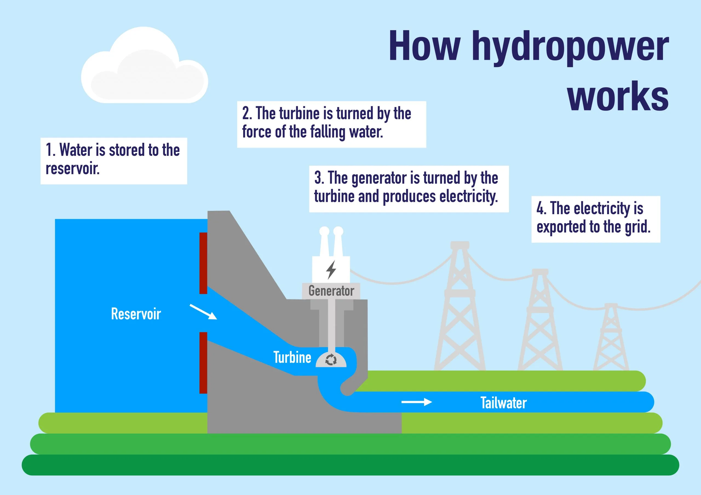

Hydropower Energy

Hydroelectric energy, commonly referred to as hydropower, is a clean and renewable energy source generated by harnessing the energy of flowing or falling water to produce electricity. This method of energy production is one of the oldest and most widely used forms of renewable energy, contributing significantly to the global electricity supply. Hydropower is valued for its ability to provide reliable, cost-effective power with minimal environmental impact compared to fossil fuels.
How Does Hydropower Energy Work?
Most hydroelectric power plants have a reservoir of water, a gate or valve to control how much water flows out of the reservoir, and an outlet or place where the water ends up after flowing downward. Water gains potential energy just before it spills over the top of a dam or flows down a hill. The potential energy is converted into kinetic energy as water flows downhill. The water can be used to turn the blades of a turbine to generate electricity, which is distributed to the power plant’s customers.
Types of Hydroelectric Energy Plants
There are three different types of hydroelectric energy plants:
- Impoundment Facilities: These are the most common type of hydroelectric power plants, which use a dam to store river water in a reservoir. Water released from the reservoir flows through turbines, generating electricity.
- Diversion (Run-of-River) Facilities: These plants channel a portion of a river through a canal or penstock to turn turbines. They typically have little or no storage capacity and rely on the natural flow of the river.
- Pumped Storage Facilities: These plants store energy by pumping water from a lower reservoir to an upper reservoir during times of low electricity demand. During peak demand, the stored water is released back down to generate electricity.
How Widely Is Hydroelectric Energy Used Around the World?
Hydroelectric energy is the most commonly-used renewable source of electricity. China is the largest producer of hydroelectricity. Other top producers of hydropower around the world include the United States, Brazil, Canada, India, and Russia. Approximately 71 percent of all of the renewable electricity generated on Earth is from hydropower.
Hydropower Energy in India: Demographics and Statistics
Hydropower contributes around 13% to India's total electricity generation.
It plays a crucial role in providing peaking power, grid stability, and meeting seasonal energy demands.
Installed Capacity and Potential
- Capacity: As of 2023, India has an installed hydroelectric capacity of around 46,000 MW, which constitutes approximately 13% of the country's total power generation capacity.
- Potential Capacity: India has an estimated hydropower potential of about 145,000 MW, with significant untapped resources primarily located in the Himalayan states.
Regional Distribution
- Northern Region: The northern states, including Himachal Pradesh, Uttarakhand, and Jammu & Kashmir, account for a significant portion of India's hydropower potential. These regions have numerous rivers and favorable topography for large-scale hydroelectric projects.
- Northeastern Region: States like Arunachal Pradesh, Sikkim, and Assam hold considerable hydropower potential due to the presence of fast-flowing rivers and high altitudes.
- Southern Region: Karnataka, Kerala, and Tamil Nadu also contribute to India's hydropower generation, with several medium to large hydroelectric projects.
Major Hydropower Projects
- Tehri Dam: Located in Uttarakhand, Tehri Dam is one of the largest hydroelectric projects in India, with an installed capacity of 1,000 MW.
- Bhakra Nangal Dam: Situated on the border of Punjab and Himachal Pradesh, this dam has an installed capacity of 1,325 MW and is a key contributor to the region's power supply.
- Sardar Sarovar Dam: Located on the Narmada River in Gujarat, this dam has an installed capacity of 1,450 MW.
Environmental and Social Impact
- Hydropower projects help reduce carbon emissions and dependence on fossil fuels.
- They also provide irrigation benefits, drinking water supply, and flood control.
- However, large hydropower projects can have significant social and environmental impacts, including displacement of communities and ecological disturbances. Efforts are being made to mitigate these impacts through sustainable development practices and community engagement.
Sustainable Practices and Tips for Supporting Hydropower
Water Conservation
Effective water conservation plays a crucial role in supporting hydropower. To reduce water wastage, start by fixing any leaks in your home, ensuring that all fixtures are functioning properly. Use water-efficient appliances, such as low-flow showerheads and faucets, to minimize water consumption. Additionally, practice mindful water usage by turning off the tap while brushing your teeth or washing dishes, which helps preserve water resources that can benefit hydropower projects.
Advocacy and Policy Support
Supporting policies that promote sustainable hydropower is essential for fostering a cleaner energy future. Stay informed about relevant legislation and actively participate in public consultations to voice your support. You can also use our provided templates to send letters or emails to your local representatives, urging them to support initiatives that advance clean energy and hydropower development.
How to Get Involved
Download the Advocacy Template (PDF)
Community Projects and Initiatives
Getting involved in local community projects can significantly impact sustainable water management. Participate in or support initiatives such as river clean-up events and tree planting near water bodies. If you’re passionate about making a difference, consider starting your own projects or organizing educational programs to raise awareness about the benefits of hydropower and the importance of water conservation.
Energy Efficiency
Complement the use of renewable energy by improving energy efficiency in your home. Enhance insulation to reduce energy consumption for heating and cooling. Choose energy-efficient appliances to lower overall energy use. Adopt smart energy habits, such as turning off lights and electronics when not in use, and consider integrating smart home technologies to manage energy consumption effectively.
Partnerships with Local Organizations
Engage with local NGOs and community groups focused on sustainable water and energy practices. Support their initiatives and collaborate on projects aimed at promoting hydropower and environmental sustainability. Additionally, partner with educational institutions to foster research and raise awareness about hydropower and its role in clean energy.
By incorporating these sustainable practices into daily life and community activities, you can help support hydropower and contribute to a cleaner, more sustainable future.